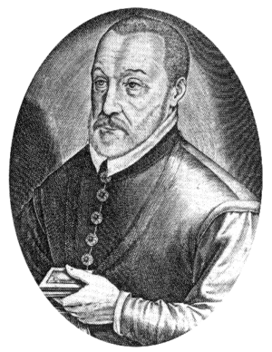

Историческая справка:
Создание шифра Виженера стало важной вехой в развитии криптографии. Блез Виженер, французский дипломат и криптограф, живший в XVI веке, ознакомился с трудами Альберти, Порты, Тритемия и обобщил их идеи в шифр, названный впоследствии в его честь.
Суть этого шифра заключается в том, что в процессе шифрования для букв открытого текста используются разные шифралфавиты, которые выбираются в соответствии с кодовым словом. Таким образом, шифр Виженера, будучи многоалфавитным, был неуязвим для методов криптоанализа тех лет и многие годы считался невзламываемым.
Метод криптоанализа шифра Виженера был разработан независимо офицером прусской армии, немецким шифровальщиком Фридрихом Касиски и английским математиком Чарльзом Бэббиджем в XIX веке. Так как Касиски первым опубликовал свое открытие, метод был назван в его честь.
Шифр Виженера, будучи достаточно простым для использования в полевых условиях, был популярен среди военных. Например солдаты Конфедеративных Штатов Америки использовали латунный шифровальный диск для реализации шифра Виженера во время Гражданской войны в США.
